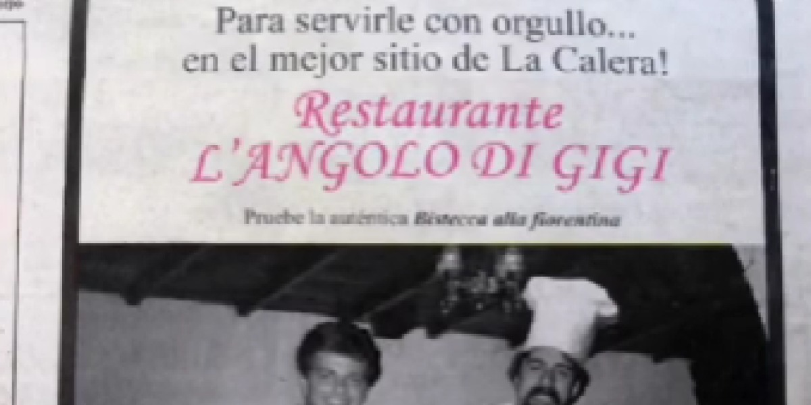

El restaurante L'Angolo di Gigi, ubicado en La Calera cerca de Bogotá en los años 80,fue un lugar muy prestigioso conocido por su exquisita cocina italiana, liderado por el chef italiano Gigi Ferruzo. Sin embargo, este restaurante pasó a la historia por un macabro rumor que lo envolvió: se decía que sus platillos, especialmente el osobuco, contenían carne humana. Este rumor creció en una época convulsa en Colombia marcada por la guerra, el narcotráfico y la violencia, generando un aura de misterio y terror alrededor del restaurante.

La historia comienza con el chef Gigi Ferruzo fundando L'Angolo di Gigi en 1980.
El restaurante alcanzó gran fama y se convirtió en el lugar preferido de la élite
bogotana, atrayendo a políticos y personalidades influyentes de la época.
Sin embargo,el chef no permitiría que nadie más que él mismo manipulara la carne, la cual aseguraba
provenía directamente de Italia, generando sospechas entre los empleados.
Durante estos años, Ferruzo cambió su comportamiento y estilo, siendo comparado con un mafioso y vinculándose
con personajes políticos relacionados con el narcotráfico y la política.
El rumor más aterrador surgió con testimonios de fuentes anónimas y supuestos exagerados de la policía secreta
que afirmaban que el chef obtenía la carne humana de cadáveres provenientes de la violencia que azotaba al país.
Se cuenta que durante eventos como la toma del Palacio de Justicia, Ferruzo tenía acceso para seleccionar los
cuerpos más "rellenos" para su cocina. Esto, sumado a la exclusividad con la que manejaba la carne, alimentó la
leyenda urbana de que L'Angolo di Gigi era en realidad un restaurante caníbal, alimentado por los muertos de la
guerra y el narcotráfico.
La fama negativa y los rumores crecientes hicieron que el restaurante perdiera clientes y cerrara sus puertas en 1983. Gigi Ferruzo desapareció misteriosamente, dejando tras de sí una leyenda que ha sido objeto de libros, documentales y programas de televisión, pero que nunca se pudo probar ni desmentir. Así, L'Angolo di Gigi se convirtió en uno de los mitos más oscuros y fascinantes de la historia gastronómica y urbana de Colombia.
Derechos de autor © 2025